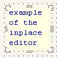

may, 2005
Vector Editor
|
- general - grid |
- general - sharing |
- StateMachine Code Generator - Timing Diagrams - VeroBorad Design - BreadBoard Design |
This vector editor is suitable for editing all kind of vector graphics, like
This vector editor is just a simple implementation of the powerfull freeware program called "Diagram Designer" from Michael Vinther (MeeSoft). The editor is very easy to use and even the creation of new objects and/or new libraries is quite easy. For general Help, you should also check the site of Meesoft Diagram Designer (Some parts of this document are copied from the official Diagram Designer help pages)
On the leftside is a treeview, showing the hierarchical construction of the project. The treeview can also be used to select an object, layer or page or to edit the properties of the selected item. A project can consist of more pages, where each page can have upto 3 layers. All layers of a page are always shown, but only the active layer can be edited. There's also 1 special layer, called "overlay", which serves as the background layer for all pages. Pages and layers (except the special overlay layer) can be rearranged.
In the center (top) is the edit window, where you can edit the active layer. The editor has full drag and drop facilities. Right clicking on an object (or on the object in the treeview) will reveal all actions you may expect from a vector editor.
On the right there are 2 library windows, from which you can drag objects to insert them into your drawing. The top library window, holds your favorite elements (which you can edit yourself and which can be different for different instances of JALcc) and is retrieved from the library file "JALcc_favorite_diagram.ddt" residing in the directory where also the JALcc inifile is (If the file doesn't exists, it is automatically created). The bottom library window can be loaded from any library file in the library path (this library path is the same for all JALcc instances). You can easily edit these libraries to fit your own needs.
zoom out / zoom in / full page / toggle grid / preview
In the center at the bottom, you see an code window, where the generated code from graphical designed statemachines is dumped. This window is only visible if a target language for the statemachine generator is selected. See for more information about Statemachines ....
The statusbar gives some information about the active object and the cursor position. The colored items in the statusbar serves also as buttons. If you're editing a library file, (which is done exactly in the same way as normal drawings) the first panel in the statusbar is RED !!
Editing is simply done by dragging objects from one of the library files to the current drawing layers. You can also select an object by clicking the Left or Middle Mousebutton, then the dragcursor will appear and you can drop the object by clicking with the Left Mouzebutton on the drawing surface. Most objects can be resized, rotated and text can be added to an item. For all basic objects (not metafiles, which are a kind of bitmaps) linestyle and colors can be changed.
Clicking the MM-button in the drawing window, toggles between edit-mode and scroll-mode (hand cursor).
The drawing surface has a grid, to which objects will snap. The grid is identical in X and Y direction and can be chozen from a predefinend set. Snapping to the grid can be prevented by holding the ALT-key, while dragging. Pay special attention to the grid settings when editing a library.
Grid settings can be changed either by right clicking on the grid button or through the (none-selected) RM-menu | Page / Editor settings.
To connect objects through rubber bands, you should be aware of the different basic object types:
Making a connection is done in the following way: select a connector object, drag one of the connector ends over a connection point (red cross) of another normal object or another connector object. As soon as the dragged connector end is over a connection point, a small green square is drawn and the connection is established by releasing the mouse button.
Removing a connection: select the connector-object, drag the endpoint away and release the mousebutton.
Not all object types (e.g. text) can be rotated, but any object can be converted to a metafile object (kind of bitmap presentation, without any vector information) which can then be rotated. Select one or more objects, RM-click | Convert to metafile. Note that when converting to a metafile, the object will be locked so that text, color and other style properties can no longer be edited. To rotate a metafile object, change the Rotation angle in the Properties dialog. The angle is in degrees, counter-clockwise rotation.
Most basic objects have a text property, that can be edited in 2 different ways: through the RM-menu | properties | ... or through the MM-button, which popups an in-place editor. This in-place editor is still far from perfect, but has the advantage that you can see the separate lines and don't need to use the \n formating code.
Some objects (e.g. StateMachine Objects) have more than 1 text property, only the first text property can be changed through the properties menu, all the other text properties can only be edited through the in-place editor.
|
 |
Example of the in place editor , the inplace editor can be closed, either through the escape key or by focusing another item. |
Formatting text labels in Diagram Designer is done via special formatting codes in the text.
|
\Afilename.ddd \B ... \b \I ... \i \H ... \h \L ... \l \S ... \s \"Font" \### \n \p \P \\ |
link to another diagram (doubleclick the object is jump) Bold On / Bold off Italic On / Italic Off Superscript On / Superscript Off Subscript On / Subsript off Symbol Font Set font by name Three-digit font size New line Page number Page title single backslash |

From the second RM-menu (no object selected) | Insert Math Plot, you can easily create and insert graphs from mathematical functions. You can write e.g. plot(sin(x),x) to plot a function. To include it in the diagram, click Copy, and then click Paste in the diagram window.
Be aware that all the expressions are case-sensitive (I'll probably change that in the future)
There are 2 different popup menus, depending on if an object is selected of not. Both popup menus are used in the edit window and in the treeview window.
Object(s) Selected Nothing Selected
Most of the items in these popups are just the common actions. A few of them might need some clarifaction.
paste as
Here you can choose how to past from the available clipboard formats.
Save Layer as Library
Any single layer can be saved as a (new) library file. The fileversion will depend upon the objects in the layer.
Properties
The exact format of the properties window will vary depending on the selected object, here a typical example:
The page / editor settings are not module dependant but are project dependant. Therefor the settings are not stored in the JALcc inifile but in a file with the same path+name of the diagram file, but with the extension ".JPR".
Because there are so few settings, the default values (for new projects, which don't have a JPR-file) is fixed at A4, portrait (all pages), 5 mm visible grid, tabcolor = blue;
Editing or creating a library is just as simple as a normal drawing. You can see a library as a simple drawing with just 1 page and just 1 layer. For editing libraries it's often more convenient to open 2 windows, open an empty to make a new object and after you're satisfied copy the object (^C) and paste (^V) it into the library. Another point of interest, you can always save the active layer of a normal drawing as a (new) library.
When editing a library file, the first panel in the statusbar is colored RED, to warn you to be very carefull.
There are 2 special libraries, your own "favorite library" and a library with all the basic objects (that's because there are no buttons to create these basic objects). When editing libraries, pay special attention to the grid settings !
This is the library shown on the right top of the vector editor window. It contains your favorites, and others (or yourself) on the same computer, can have different favorites-library. The favorites-library resides in the directory where the current JALcc inifile is stored and is named "JALcc_favorite_diagram.ddt". By starting JALcc with another inifile in a different directory, you will have a different favorite library file. If the favorite library file doesn't exists, it's created.
This library contains all the basic elements and resides in the mainpath of JALcc. This file can not be edited.
If you've made a new object library palette for diagrams or flowcharts which you find could be usefull to others, then please send them to MeeSoft (Send only files with fileversion 11). It could be symbols for e.g. electronic diagrams or software design flowcharts.
On the MeeSoft website you can find the currently available libraries: Diagram Designer template palettes
Some objects (StateMachine objects, BreadBoard objects, VeroBoard objects and Timing Diagram Objects) are not supported by the official version of Diagram Designer, so don't send libraries derived from these objects to MeeSoft. Libraries with one or more of these special components will have version number N*100+11, where N is the special JALcc version number, starting at N=0.
If edited libraries are saved the are saved in version 11, if it doesn't contain any special JALcc objects, like StateMachine Objects. Otherwise it's saved as version N*100+11. Uploading of libraries to the MeeSoft website with version number higher than 11 is not meaningfull.
Downloading of libraries from the MeeSoft site goes well for libraries upto version 10, and sometimes goes well for libraries of version 11. I don't have the correct information about the differences between version 10 and 11, so I cann't fix this problem.
|
|
Before making an object you best decide first if this object is just used once in this drawing or that it will be part of a library. If it will be part of a library, first edit the object in a new diagram (or new layer), and when you're satisfied, open the library for editing and copy and paste the newly created object in the library. |
|
GRID |
Pay special attention to the grid settings, when creating objects for libraries. If you are using the library later on in a drawing with a different grid setting, the objects may not be alligned properly. |
|
|
The first you have to do when creating a polygon object is to draw the outline using simple lines. In this example we will make a simple filled triangle. |
|
|
The lines must be connected with no holes in the shape |
|
|
Then the lines should be combined to a group: Select the lines and click Object | Group. |
|
|
Now the group can be converted to a polygon using Object | Convert to polygon. Polygons can be filled and text can be written in the center. |
|
|
Now you can add connection points and store the new object in a library file |
Adding Connection Points to an object is done through the window shown below. At the moment it's a bit clumsy, but I intend to improve that soon. Connection Points are always definied in a relative way, that's X-range and Y-range are from 0..1. You either add new points by clicking in the image with the grid or press Add, after which you much type the coordinates.
Some objects may need some clarification:
Curved Lines, when a curved line is drawn for the first time, the show up like a straight line with just 2 points. After selecting the curved line, all avaliable points will become visible. By clicking Left and Right mousebutton simultanuous on one of the points, a point is inserted near the clicked point. By dragging the points, smooth curves will appear.
For JALcc a number of special components are created:
All settings (like splitter positions, target language, tree expansion, etc) are stored in a project file, with the same filename and directory as the project (*.ddd) but with the extension JPR).